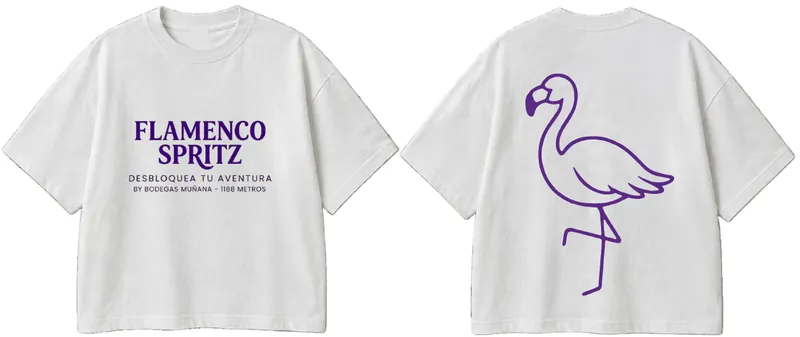

Granada
3 tardeos
- Local de ejemplo L01[PENDIENTE: fecha]
- Local de ejemplo L02[PENDIENTE: fecha]
- Local de ejemplo L03[PENDIENTE: fecha]
Ejemplo
Tardeo de invierno · nov. 2027 – feb. 2028
Tres tardeos por ciudad en locales que ya sirven la Original. Las 20 primeras personas reciben el kit, y después está el pulsador.
Granada
Ejemplo
Málaga
Ejemplo
Sevilla
Ejemplo
Los locales son ejemplos ficticios del prototipo. Fechas exactas: pendientes.

El vino solo se disfruta con moderación. No compartir con menores de 18 años.